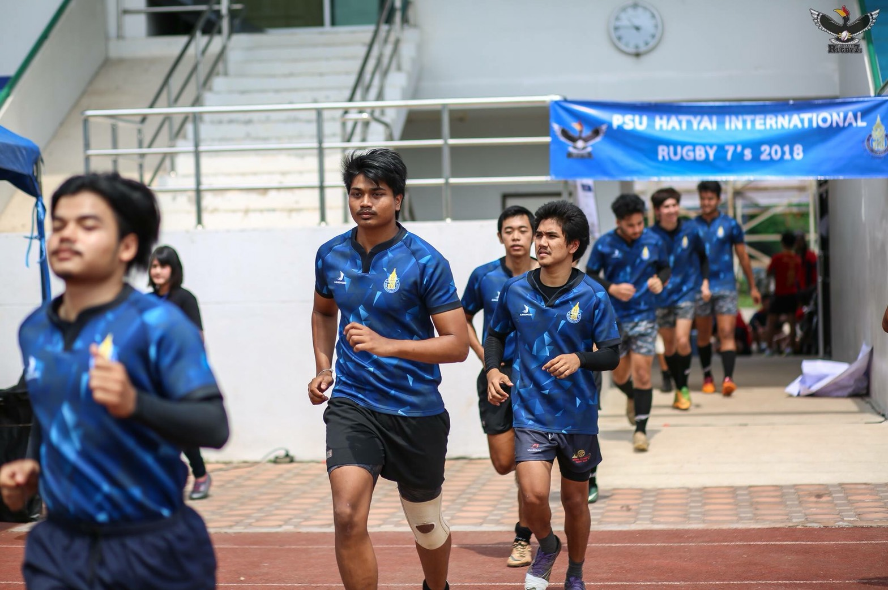
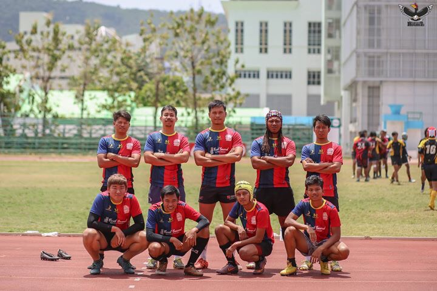
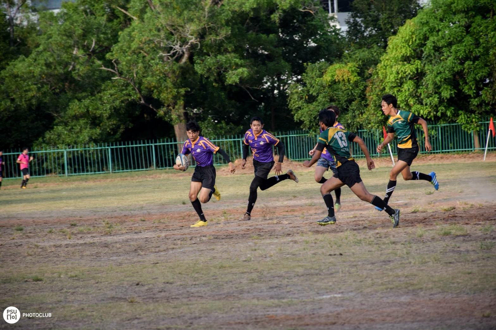
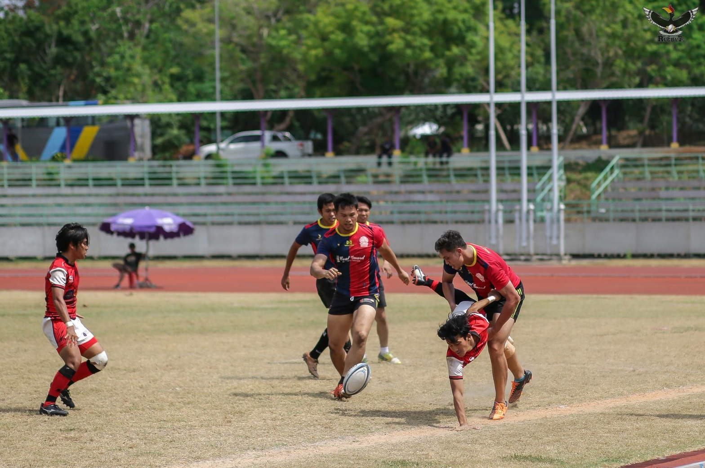
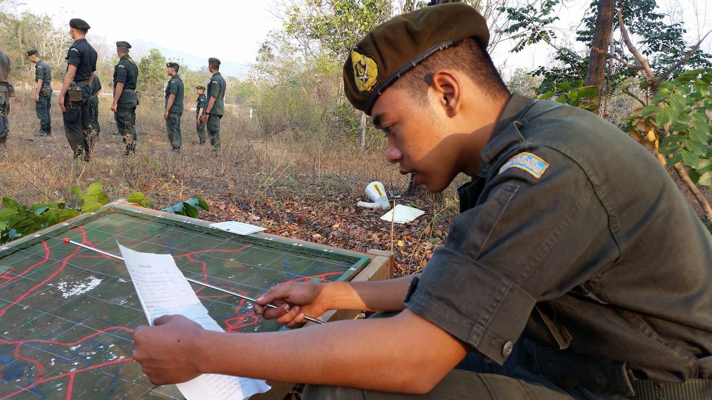
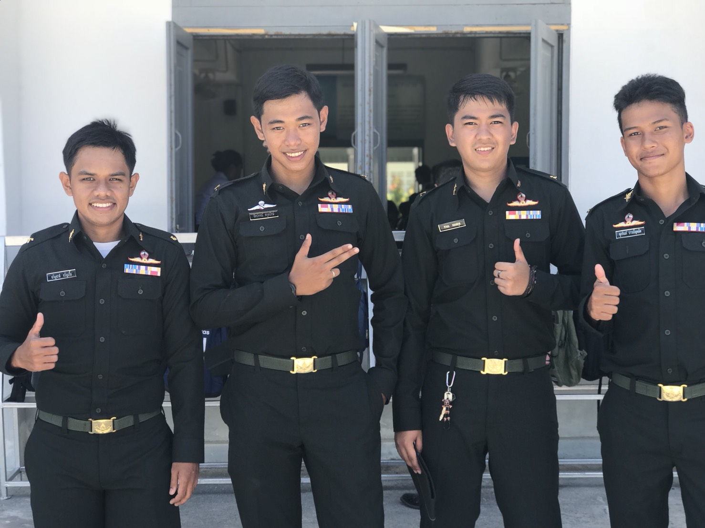
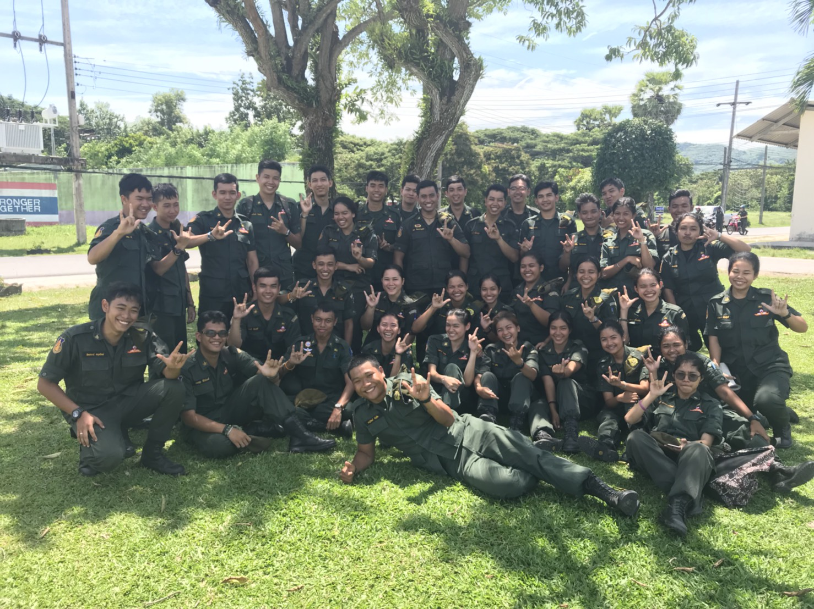

กิจกรรมที่ทำภายในมหาลัยส่วนใหญ่จะเป็นการแข่งขันกีฬารักบี้ฟุตบอลทั้งภายในและภายนอกมหาลัยใช้เวลาในการซ้อมค่อนข้างจะมากเป็นกิจกรรมหลักทุกๆตอนเย็นที่ผมมักจะทำการซ้อมกีฬานั้นจะได้ทั้งสุขภาพร่างกายที่แข็งแรงและสุขภาพจิตใจที่ดีและกิจกรรมเหล่านี้จะสามารถพบเจอกับผมได้ที่บริเวณสนามบนมหาวิทยาลัยสงขลานครินทร์ตั้งแต่17.00นเป็นต้นไป ใครที่สนใจอยากจะศึกษาการเล่นกีฬารักบี้ก็สามารถที่จะมาสอบถามได้หรือใครที่มีทักษะกีฬานี้แล้วก็สามารถมาร่วมแจมร่วมสนุกกับพวกผมได้ ซึ่งคนส่วนใหญ่จะไม่ค่อยรู้จักกีฬาชนิดนี้ผมจึงเป็นตัวแทนที่จะทำให้ผู้คนได้รู้จักกีฬาชนิดนี้ให้มากขึ้น
ภาพการแข่งขันรักบี้ฟุตบอลเหล่านี้ล้วนแล้วแต่มาจากการฝึกฝนทั้งสิ้นผู้ที่จะทำการลงแข่งขันกีฬาได้นั้นจะต้องเป็นผู้ที่มีระเบียบวินัยในการซ้อมที่ดีเพราะการที่จะสร้างชื่อเสียงให้แก่มหาลัยได้จะต้องผ่านการฝึกฝน ฝึกซ้อมเป็นอย่างมากซึ่งภาพการแข่งขันนี้เป็นภาพการแข่งรักบี้ PSU Rugby ซึ่งทางมหาวิทยาลัยสงขลานคริทร์ได้เป็นเจ้าภาพในการจัดงาน
ส่วนการแข่งขันรักบี้ฟุตบอลนี้เป็นการจัดการแข่งขันรักบี้ฟุตบอลประเพณีหรือเรียกอีกชื่อว่ากีฬา16คณะ ซึ่งการแข่งขันนี้จะเป็นการแข่งขันภายในมหาวิทยาลัยสงขลานครินทร์เท่านั้นซึ่งผู้ที่จะสามารถลงแข่งขันกีฬา รักบี้ฟุตบอล16คณะ จะต้องมีความรู้ความสามารถในการเล่นกีฬารักบี้ฟุตบอลมาก่อนหากไม่มีความรู้หรือทักษะการเล่นก็จะไม่สามารถลงแข่งขันกีฬาชนิดนี้ได้
ภาพบางส่วนจากการแข่งขันซึ่งผู้ที่ต้องการดูการแข่งขันรักบี้ฟุตบอลPSU Rugbyจะสามารถดูย้อนหลังได้จาก ชมรักบี้ฟุตบอลมหาวิทยาลัยสงขลานคริทร์
การเข้าฝึกนักศึกษาวิชาทหารและการช่วยเหลือกิจกรรมต่างๆภายในมหาวิทยาลัยและการฝึกระเบียบวินัยรวมทั่งเป็นตัวอย่างที่ดีให้แก่สังคมซึ่งตัวผมเอกได้เข้าศึกษาต่อเกี่ยวกับนักศึกษาวินักศึกษาวิชาทหาร และใช้เวลาในการเรียนภาคที่ตั้งเป็นระยะเวลา20วันซึ่งใช้ระยะเวลาในการเรียนค่อนข้างมากผู้ที่ต้องการจะศึกษาหรือเข้าเรียนต่อนึกศึกษาวิชาทหารชั้นปีที่4และชั้นปีที่5ก็สามารถติดต่อได้กับทางมหาวิทยาลัยหรือติดต่อได้ทางแฟนเฟจ ชมรมนักศึกษาวิชาทหารมหาวิทยาลัยสงขลานคริทร์
การเข้ารับการฝึกฝนให้ตนเองมีระเบียบวินัยรู้จักการให้รู้จักการช่วยเหลือเป็นสิ่งที่ดี การเป็นตัวอย่างที่ดีให้แก่ผู้อื่นเป็นแบบอย่างที่ดีให้แก่สังคม จนทำให้ได้มาซึ่งการเป็นนักศึกษาวิชาทหารดีเด่น
การช่วยเหลือสังคมการทำประโยชน์ให้แก่บ้านเมืองเป็นสิ่งที่ดีซึ่งภาพเหล่านี้ เป็นภาพที่ได้จากการทำกิจกรรมสงขลาสะอาดได้ด้วยมือเราคือการที่ให้นักศึกษาวิชาทหารทำความสะอาดบริเวณจุดต่างๆ ในตัวเมืองจังหวัดสงขลาและเป็นการเสียสระเวลาของตนเองเพื่อทำประโยชน์ให้แก่สังคม
ความแข็งแรง
ความคล่องตัว
ทักษะการทำงาน